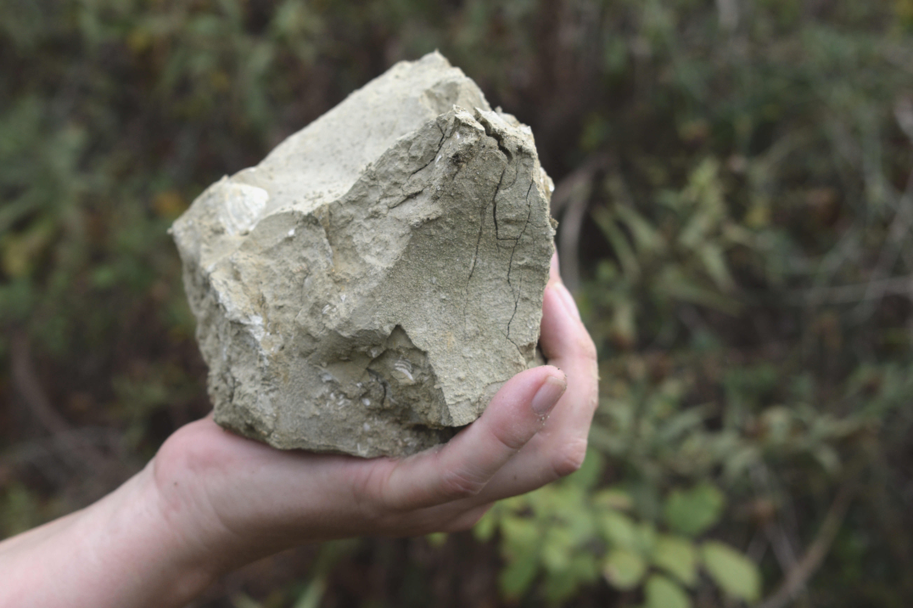

O som que se esconde nos Torrões

O som que se esconde nos torrões é um projeto colaborativo que procura cruzar a disciplina do som com o entendimento do barro/terra próprio da cerâmica, a partir de uma aproximação ao universo sonoro da terra Trafaria, com o objetivo de consciencializar a comunidade sobre o valor da história do lugar e, sobretudo, do potencial dos pequenos detalhes que estão à espera de ser apanhados, tais como torrões no mato.